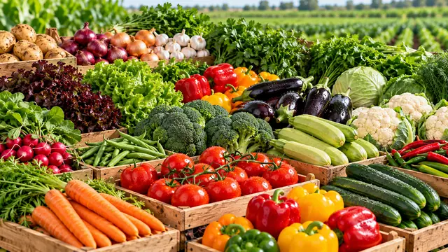
01
Fresh vegetables
Tomatoes, peppers, cucumbers, zucchini, potatoes, onions, carrots, leafy greens and herbs.
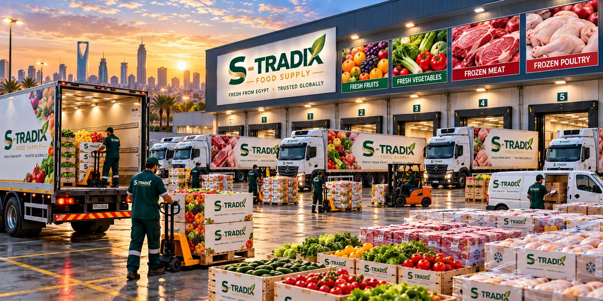
S-TRADIX Food Supply imports fresh vegetables, fruits, herbs and spices from Egypt and supplies our clients across all cities of Saudi Arabia — harvested, sorted, packed and delivered through an integrated cold chain, in line with Saudi specifications and each client’s requirements.
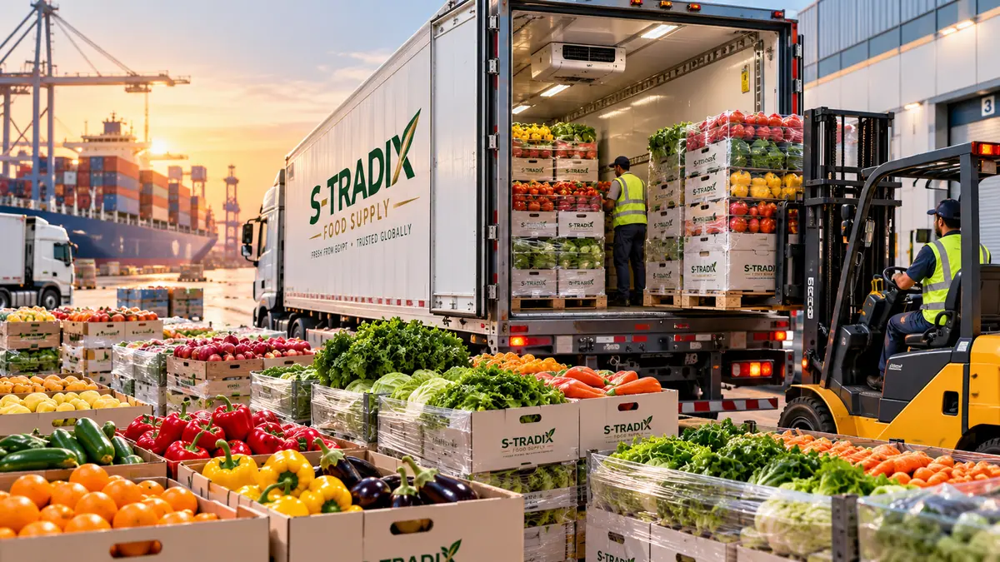
Harvested in Egypt · delivered in Saudi ArabiaWe source from farms in Egypt to bring every type of fresh vegetable and fruit — together with herbs and spices — to clients in Saudi Arabia. Produce is selected and packed to Saudi market specifications and to each client’s order, then moved through refrigerated transport for timely, reliable delivery.
Seasonal and year-round produce from Egypt. Product range varies by season and availability.

Tomatoes, peppers, cucumbers, zucchini, potatoes, onions, carrots, leafy greens and herbs.
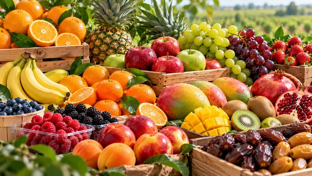
Citrus, table grapes, mangoes, pomegranates, bananas, berries and seasonal fruits.
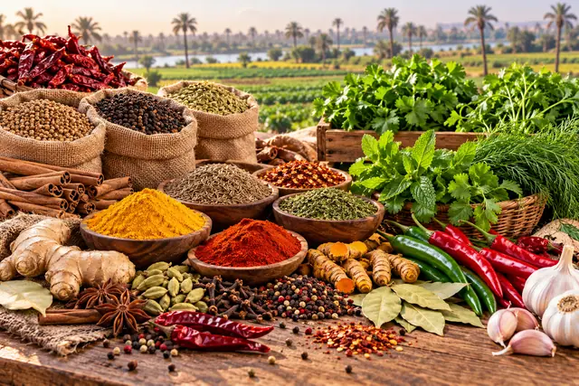
Fresh herbs, whole and ground spices and culinary seasonings sourced in Egypt.
Every shipment follows the same controlled route — so what reaches your kitchen, store or site is as fresh as the day it was picked.
High-quality produce selected at source.
Graded and packed to international standards.
Temperature-controlled from packing house onward.
Fast, secure shipping from Egypt to the Kingdom.
Refrigerated delivery to every city in Saudi Arabia.
Reliable, scheduled supply throughout the year.
Vegetables and fruits are packed in branded S-TRADIX Food Supply cartons and held in temperature-controlled storage, ready for scheduled dispatch.
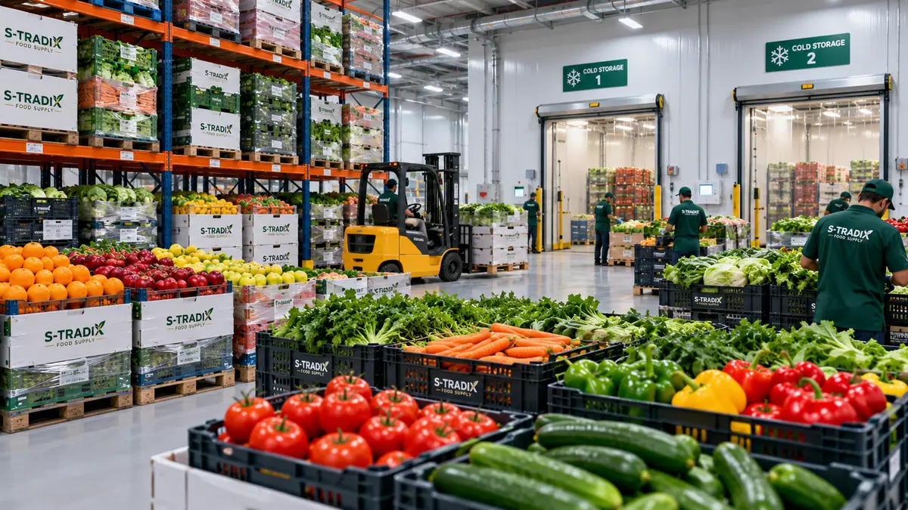
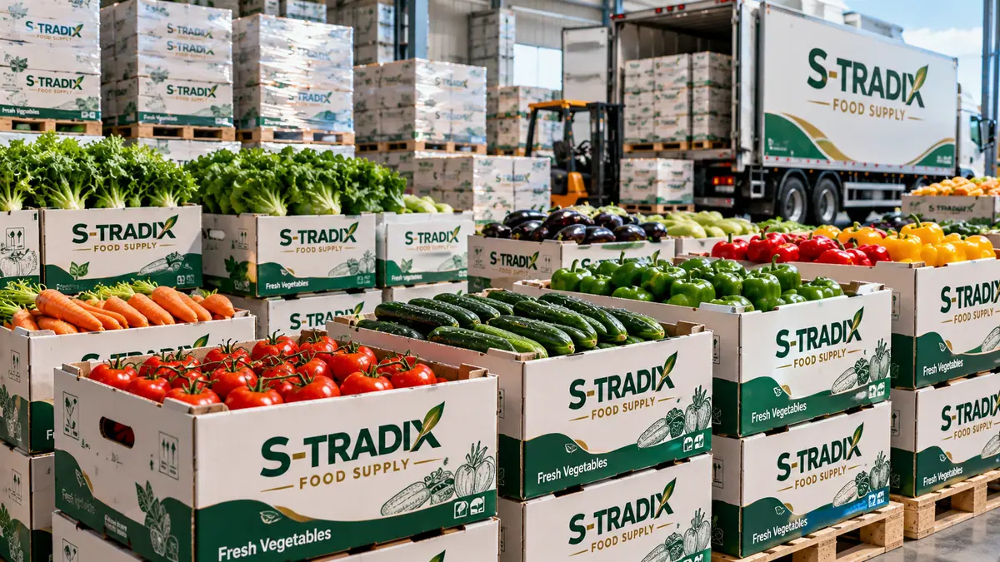
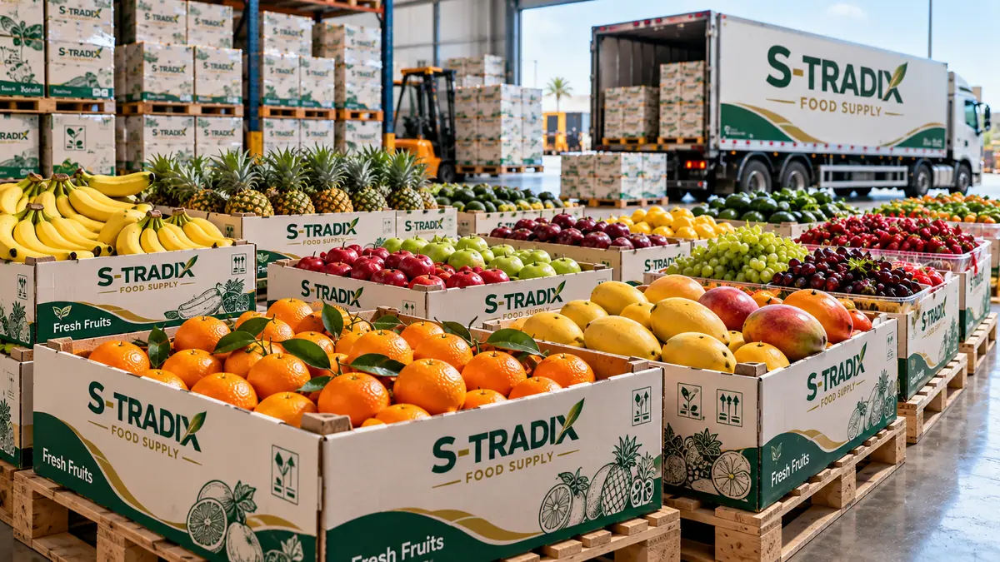
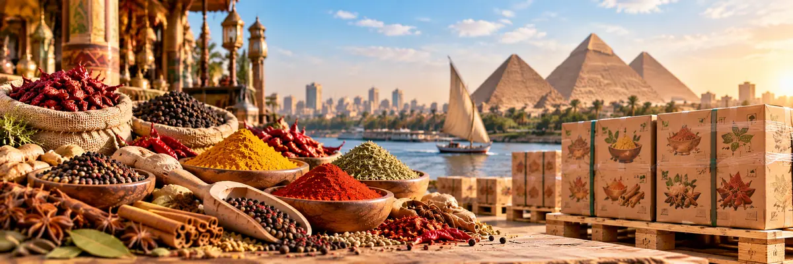
Alongside fresh produce we supply herbs, whole and ground spices and culinary seasonings — sourced in Egypt, packed for export and delivered to clients across the Kingdom.
Egypt is our sourcing and export origin; our Saudi branch in Al Khobar coordinates orders, distribution and direct customer support.
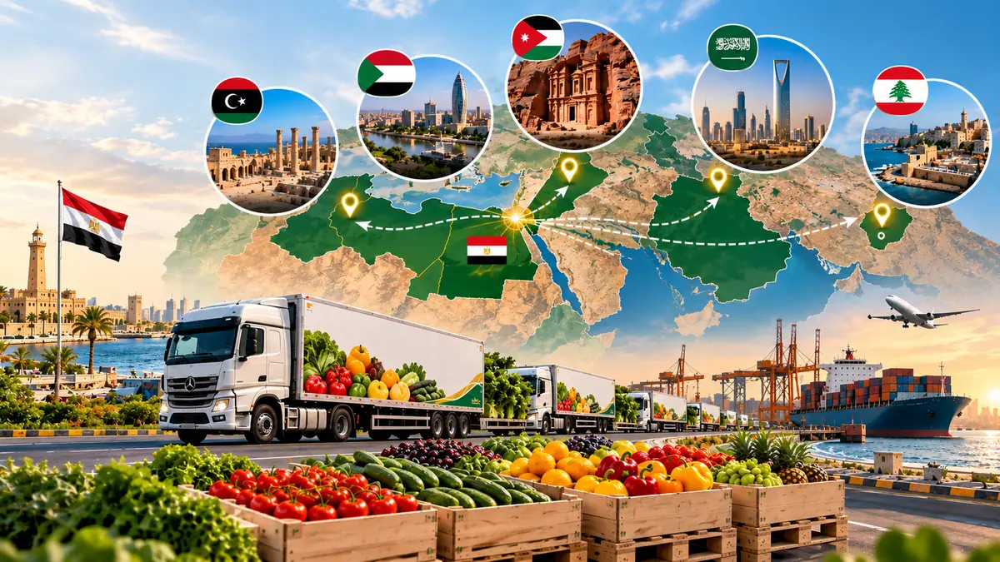
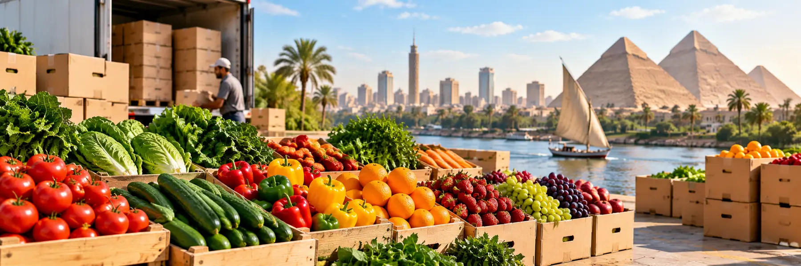
Share your list, quantities, delivery cities and schedule — we’ll prepare a supply plan and quotation.